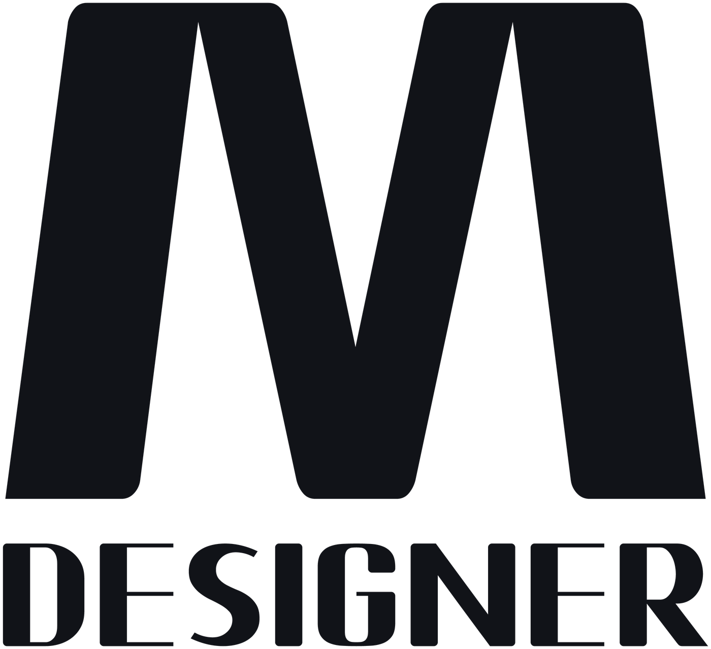

محمد المصري
مصمم جرافيك — إعلانات السوشيال ميديا
الحالة
متاح لوظيفة بدوام كامل
ولمشاريع حرة ولعمل عن بُعد
نبذة
مصمم جرافيك في مكة المكرمة، واشتغلي الأساسي هو الإعلان بالعربي: بوست يوقف الإصبع في منتصف التمرير. أبني الإعلان من الجملة أولًا — صياغة عربية تُقرأ في ثانية واحدة — ثم منتج يبدو شهيًا داخل الكادر، ثم تكوين يحمل الفكرة كاملة دون زحمة. ثلاث سنوات عملية على أدوبي فوتوشوب، وسنتان على أدوبي إليستريتور، ومونتاج الفيديو الإعلاني على كاب كات، وسنتان على إنتاج الصور بالذكاء الاصطناعي عبر نماذج جوجل (Google) ثم معالجتها يدويًا قبل النشر. سلّمت 68 تصميمًا إعلانيًا و80 نسخة جاهزة للنشر لـ38 علامة في المطاعم والأغذية والألبان والمشروبات والسلع الاستهلاكية والتجزئة والسياحة وتطبيقات الطلبات، وكل حملة تُسلَّم بمقاساتها المربعة والطولية والعرضية.
المنهج في العمل
ستة مبادئ أطبّقها على كل تصميم قبل التسليم — وهي سبب ثبات المستوى من حملة إلى أخرى.
تُقرأ قبل أن تُشرح
أختبر الجملة على بُعد ذراع: إن احتاجت إلى شرح فهي لم تُكتب بعد. الوزن والحجم والمسافة تُضبط حتى يسبق المعنى تفصيلَ الصورة.
الواقعية قبل الزخرفة
قصٌّ نظيف، وظلّ مقنع، وإضاءة واحدة للوحة كلها، ولون منتج مطابق للخلفية. منتج لا يستقر على سطحه يبدو ملصقًا لا إعلانًا.
النظام قبل التصميم
كل حملة تُبنى على إطار موحّد: شبكة، وهامش، ومقياس حروف، وموضع ثابت للشعار. بوست الحملة الثاني يُعرّف صاحبه من أولها.
لكل موسم لغته
رمضان له ضوء مختلف عن عيد الفطر وعن موسم العروض. أُغيّر الخلفية والرموز والألوان وأُبقي النظام كما هو حتى تبقى العلامة معروفة.
الذكاء الاصطناعي خام، والمعالجة يدوية
النموذج يعطيني الفكرة بسرعة؛ وتنقية الحواف، وتصحيح الإضاءة، ورفع الدقة، وضبط التفاصيل كلها تمرّ بيدي قبل النشر.
التسليم على المقاس لا القصّ إليه
المربع للمنشور، والطولي للستوري والريلز، والعرضي للبنر والغلاف. ثلاثة مقاسات من فكرة واحدة، لا ثلاثة تصاميم متنافرة.
المهارات الأساسية
- تصميم إعلانات السوشيال ميديا — صياغة البوست من الفكرة إلى التسليم النهائي بكل المقاسات: منشورات ثابتة، وبنرات حملات، وغلافات.
- التايبوغرافي العربي — توزيع الجملة العربية على الكادر، وموازنة الوزن والحجم والمسافة مع الصورة، والخط الذي يُقرأ قبل أن يُشرح.
- تكوين ودمج المنتجات والأطعمة — قصّ دقيق، وظلال وإضاءة مقنعة، وتوحيد لون المنتج مع الخلفية حتى يبدو طبيعيًا داخل الإعلان.
- الهوية البصرية وأنظمة السوشيال — إطار موحّد لسلسلة بوستات ومقالات، وأيقونات، وتخطيط شبكي متكرر يُسهّل الإنتاج المستمر.
- مونتاج وتعديل الفيديو الإعلاني — عمل احترافي عبر كاب كات: قصّ عمودي للسوشيال، وتوقيت على الموسيقى، ونصوص متحركة، وتجهيز الريلز والستوري.
- إنتاج الصور بالذكاء الاصطناعي — صور خام سريعة عبر نماذج جوجل، ثم معالجة يدوية: تنقية الحواف، وتصحيح الإضاءة، ورفع الدقة قبل النشر.
- تصميم مواسم الحملات — رمضان والأعياد ومواسم العروض بلغتها البصرية الخاصة، مع تسليم الحملة كاملة بكل المقاسات.
- تجهيز مرجع المنتج والقصّ الدقيق — البحث عن صورة المنتج الصحيحة، وفصلها عن خلفيتها بنظافة، وترميم حوافها قبل أي تركيب.
- معاينة الألوان وتوحيد الطبعة — مطابقة لون المنتج والعبوة بين صور الحملة نفسها حتى لا تتغيّر العلامة بين بوست وآخر.
- ضبط الجودة قبل النشر — قراءة النص على شاشة حقيقية، وتباين يكفي للمساحات الصغيرة، ووزن ملف لا يُبطئ المنشور.
الخبرة
مصمم جرافيك مستقل — إعلانات السوشيال ميديا
2022 — حتى الآنإنتاج تصاميم إعلانية بالعربي لعلامات في المطاعم والأغذية والمشروبات والسلع الاستهلاكية والتجزئة والسياحة. بناء أسلوب إعلاني موحّد لكل حملة، من أول بوست حتى آخر مقاس، وتسليم كل تصميم بالمقاسات المربعة والطولية والعرضية. العمل اليومي يشمل البحث عن مرجع المنتج، والقصّ والتركيب، وضبط الإضاءة والظل، والتايبوغرافي العربي، والمراجعة النهائية الجاهزة للنشر.
أنظمة هوية ومحتوى — مشروع شخصي
2021 — 2024بناء هوية بصرية كاملة ونظام محتوى: إطار زخرفي موحّد، ونسخ مربعة وطولية وعرضية لكل منشور ومقال، وتجارب مطوّلة على الخط العربي والتايبوغرافي. هذه المرحلة أسّست الدقة في التسليم المتكرر والالتزام بالنظام البصري بدل الاجتهاد في كل تصميم على حدة.
النشر المهني على بيهاينس
فبراير 2025 — حتى الآننشر الأعمال بانتظام على بيهاينس وبناء معرض أعمال منسّق: مشروع مستقل لكل حملة، وعرض كل تصميم بكل مقاساته داخل المشروع نفسه. أكثر من 60 إعلانًا منشورًا لعلامات سعودية، و12 مشروعًا موثّقًا في هذه السيرة بروابط مباشرة إلى بيهاينس.
سجل الأعمال
علامة واحدة في كل بطاقة، بشعارها الرسمي، وتحتها كل تصميم صمّمته لها: نص الإعلان، ومقاساته المُسلَّمة، وسنته، وأبعاده المصدرية. مرتّب حسب المجال، ثم حسب العميل الأكثر أعمالًا. اضغط أي تصميم لعرضه بالحجم الكامل في المعرض.
المقاسات: مربع 1:1 · طولي 4:5 · عرضي 16:9 — والأرقام هي الأبعاد المصدرية بالبكسل لكل نسخة مُسلَّمة.
الأدوات
التصميم
الحركة والمونتاج
إنتاج الصور بالذكاء الاصطناعي
الجودة والدقة
المجالات واللغات
مسار التعلّم 2021 — 2026
البداية — أساسيات فوتوشوب
تعلّم من الصفر: الطبقات، والتحديد والقصّ، وتصحيح الألوان، ودمج الصور. تدريب طويل على تجهيز الصور وتنظيف حوافها.
فوتوشوب بعمق — وأول هوية بصرية
تركيب منتجات الطعام، وظلال وإضاءة مقنعة، وأول هوية كاملة. بداية تعلّم إليستريتور: المتجهات والشعارات والتخطيط الشبكي.
أنظمة محتوى وسوشيال بالعربي
إطار زخرفي موحّد، ونسخ مربعة وطولية وعرضية لكل محتوى، وتجارب جدية على التايبوغرافي العربي والخط.
احتراف إليستريتور + مونتاج كاب كات
تثبيت إليستريتور على الشعارات والأنظمة، وإضافة مهارة مونتاج الفيديو الإعلاني: قصّ عمودي، وتوقيت على الموسيقى، ونصوص متحركة.
إعلانات العلامات السعودية
النشر المنتظم على بيهاينس، وأكثر من 60 إعلانًا للمراعي والبيك والطازج وجاهز وجرير وكينزا والقدية ودبي وغيرها.
الذكاء الاصطناعي التوليدي — واليوم
سنتان على نماذج جوجل للصور مع معالجة يدوية لكل ناتج، وتوسيع الأعمال على علامات جديدة، وتسليم كل حملة بكل مقاساتها.
التواصل
البريد: muhammedwork7623@gmail.com — الرد خلال يوم عمل. المعرض الكامل بكل التصاميم ومقاساتها على موقع الأعمال، والأعمال المنشورة على حسابي على Behance.
Muhammad Al-Masri
Graphic Designer & Social Advertising Designer
Status
Open to a full-time role,
freelance projects and remote work
Summary
Graphic designer in Mecca, Saudi Arabia, working almost entirely on Arabic social advertising: the post that stops a thumb mid-scroll. I build an ad from the line first — Arabic that reads in one second — then a product that looks appetising inside the frame, then a composition that carries the idea without noise. 3+ years of professional Adobe Photoshop practice, 2+ years in Adobe Illustrator, advertising video edited in CapCut, and two years producing raw imagery with Google's generative models (Nano Banana 2, Nano Banana Pro) before hand-retouching it for publication. Delivered 68 advertising designs and 80 export-ready versions for 38 brands across restaurants, food, dairy, drinks, FMCG, retail, tourism and ordering apps, with every campaign shipped square, portrait and landscape.
Method
Six rules applied to every design before it ships — they are why the level holds steady from one campaign to the next.
Reads before it explains
I test the headline at arm's length: if it needs explaining it is not written yet. Weight, size and space are tuned until the line lands before the image is decoded.
Believability before decoration
Clean cut-out, convincing shadow, one light direction across the whole frame, and product colour matched to its background. A product that does not sit on its surface reads as a sticker, not an ad.
System before design
Each campaign is built on one framework: grid, margin, type scale, fixed logo position. The second post of a series is recognisable from the first.
Every season has its own language
Ramadan is lit differently from Eid and from an offer season. Backgrounds, symbols and palettes change; the system stays, so the brand stays knowable.
AI gives the raw, the hand gives the finish
Generative models produce the fast idea. Edge cleanup, lighting correction, upscaling and detail restraint all pass through me before publishing.
Delivered to the format, not cropped into it
Square for the feed, portrait for stories and reels, landscape for banners and covers. Three formats from one idea, not three unrelated designs.
Core Skills
- Social media advertising design — the post from concept to final delivery in every format: static posts, campaign banners and covers.
- Arabic typography — setting the Arabic line in the frame, balancing weight, size and negative space against the image, with type that reads before it is explained.
- Product and food compositing — precise cut-outs, believable shadow and light, and colour matching so the product sits naturally inside the ad.
- Visual identity and social systems — one consistent framework across a post and article series, iconography, and repeatable grid layouts for ongoing production.
- Advertising video editing and montage in CapCut — vertical cuts for social, timing to music, animated type, reels and stories delivery.
- AI-assisted image production — fast raw generation with Google models, then hand retouching, edge cleanup and upscaling before publishing.
- Seasonal campaign design — Ramadan, Eid and offer seasons built in each season's own visual language, shipped as a complete campaign set.
- Product reference and clean extraction — finding the right product shot, separating it from its background, and rebuilding its edges before any compositing.
- Colour consistency across a campaign — matching product and packaging colour between images so the brand does not shift from post to post.
- Pre-publication quality control — legibility on a real screen, contrast that survives small sizes, and file weight that does not slow the post down.
Professional Experience
Freelance Graphic Designer — Social Advertising
2022 — PresentProduce Arabic advertising design for Saudi and Gulf brands in restaurants, food, drinks, FMCG, retail and tourism. Build one visual system per campaign, from the first post to the last format, and deliver every design square, portrait and landscape. Day-to-day work covers product reference and cut-out, compositing and lighting, Arabic headline setting, colour matching, and final quality control before publication.
Visual Identity and Content Systems — Personal Brand Project
2021 — 2024Built a complete identity and content system: one decorative frame across the series, square, portrait and landscape variants for every post and article, and extended experiments in Arabic type. This stage established the discipline of repeatable, on-system delivery instead of reinventing each design.
Published Portfolio — Behance
February 2025 — PresentConsistent professional publishing on Behance, with a curated project per campaign and every format of that campaign shown inside the project itself. More than 60 advertising designs released for Saudi brands, and 12 projects linked directly from the work ledger below.
Work Ledger
One brand per card, with its official mark, and every design made for it underneath: the advertising line, the formats delivered, the year and the source pixel dimensions. Ordered by sector, then by the client with the most work. Open any design to see it full size in the gallery.
Formats: square 1:1 · portrait 4:5 · landscape 16:9 — the figures are the original pixel dimensions of each delivered version.
Tools and Software
Design
Motion and edit
Generative image production
Quality and resolution
Sectors and Languages
Learning and Development
Adobe Photoshop fundamentals
Layers, selection and cut-outs, colour correction, compositing. Long training on preparing images and cleaning their edges.
Photoshop in depth — first complete identity
Food and product compositing with believable shadow and light, and a first full visual identity. Adobe Illustrator started: vectors, marks and layout grids.
Arabic content and social systems
One decorative frame across a series, square, portrait and landscape versions of every post and article, and serious work on Arabic typography.
Illustrator to a professional level + CapCut
Illustrator settled on marks and systems; added advertising video editing — vertical cuts, timing to music, and animated type.
Saudi brand advertising at scale
Regular publishing on Behance and more than 60 ads for Almarai, Al Baik, Tazaj, Jahez, Jarir, Kinza, Qiddiya, Dubai and others.
Generative AI and today
Two years on Google's image models with hand finishing on every output, new clients added, and every campaign delivered in all three formats.
Contact
Email: muhammedwork7623@gmail.com — reply within one working day. The full portfolio, with every design at full size and its original pixel dimensions, is on the portfolio website, and published projects are on the Behance profile.